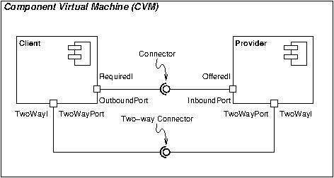
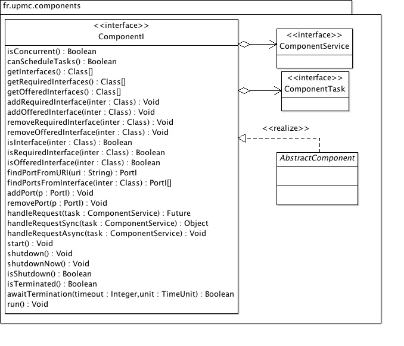

| Interface | Description |
|---|---|
| ComponentI |
The interface
ComponentI serves as common supertype for all
classes that implements components in this component model. |
| ComponentI.ComponentService<V> |
The interface
ComponentService is meant to group under a
same interface all of the requests that return results for this
component. |
| ComponentI.ComponentTask |
The interface
ComponentTask is meant to group under a
same interface all of the tasks for this component. |
| ComponentI.FComponentService<T> |
The interface
FComponentService is a functional interface
allowing to use Java 8 lambda-expressions to create service tasks to be
submitted to components. |
| ComponentI.FComponentTask |
The interface
FComponentTask is a functional interface
allowing to use Java 8 lambda-expressions to create service tasks to be
submitted to components. |
| ComponentStateI |
The interface
ComponentStateI represents the common supertype
of all states in components life-cycles. |
| PluginI |
The interface
PluginI defines the basic implementation
services of component plug-ins seen as objects. |
| Class | Description |
|---|---|
| AbstractComponent |
The class
AbstractComponent represents the basic information
and methods for components in the component model, completing the component
virtual machine with operations dealing with individual components. |
| AbstractComponent.AbstractService<V> |
The abstract class
AbstractService provides the basic
method implementations for component service calls. |
| AbstractComponent.AbstractTask |
The abstract class
AbstractTask provides the basic
method implementations for component tasks. |
| AbstractComponentHelper |
The class
AbstractComponentHelper defines a set of static
methods used in the class AbstractComponent but also in
some others. |
| AbstractPlugin |
The abstract class
AbstractPlugin defines the most generic
methods and data for component plug-ins. |
| AbstractPlugin.Fake |
The static class
Fake implements a fake component used to
call the services of the component on which the plug-in is to be
installed or uninstalled. |
| AbstractPort |
The class
AbstractPort represents the basic properties and
behaviours of ports in the component model. |
| IntercessionInboundPort |
The class
IntercessionInboundPort defines the inbound port
associated the interface IntercessionI. |
| IntrospectionInboundPort |
The class
IntrospectionInboundPort defines the inbound port
associated the interface IntrospectionI. |
| ReflectionInboundPort |
The class
ReflectionInboundPort defines the inbound port
associated the interface ReflectionI. |
| Enum | Description |
|---|---|
| ComponentState |
The enumeration
ComponentState describes the different
states in which a component can be during its life-cycle. |
Basic component model.
| Licence |
|---|
|
Copyright Jacques Malenfant, Sorbonne Universite. Jacques.Malenfant@lip6.fr This software is a computer program whose purpose is to provide a basic component programming model to program with components distributed applications in the Java programming language. This software is governed by the CeCILL-C license under French law and abiding by the rules of distribution of free software. You can use, modify and/ or redistribute the software under the terms of the CeCILL-C license as circulated by CEA, CNRS and INRIA at the following URL http://www.cecill.info. As a counterpart to the access to the source code and rights to copy, modify and redistribute granted by the license, users are provided only with a limited warranty and the software's author, the holder of the economic rights, and the successive licensors have only limited liability. In this respect, the user's attention is drawn to the risks associated with loading, using, modifying and/or developing or reproducing the software by the user in light of its specific status of free software, that may mean that it is complicated to manipulate, and that also therefore means that it is reserved for developers and experienced professionals having in-depth computer knowledge. Users are therefore encouraged to load and test the software's suitability as regards their requirements in conditions enabling the security of their systems and/or data to be ensured and, more generally, to use and operate it in the same conditions as regards security. The fact that you are presently reading this means that you have had knowledge of the CeCILL-C license and that you accept its terms. |
The package fr.sorbonne_u.components provides a basic
component model. This model is constructed around the common
following concepts:
The next figure shows how these artifacts correspond to UML entities and artifacts in component diagrams. As the dashed arrows show, the normal flow of control is for the client component to call a service offered by a provider component. The model also offers data connections, where the client and the provider exchanges information rather than call each other services. In data connections, the provider provides data that is consumed by the client. Data connections can be of two modes: pull or push. In the pull mode, the client takes the initiative of requiring a new datum from the provider, which responds by providing such a new datum. In push mode, the provider is taking the initiative to send a new datum to the client whenever it wants. Two way data connection can also be set up, where both exchange roles as provider and client, and can adopt either the pull or push modes.
Components can be created recursively, as part-whole hierarchies of components where subcomponents are embedded in an aggregate component. Unless explicitly promoted to the ports of the aggregate component, the ports of subcomponents are not visible from the outside. Hence, the distinction between an assembly and an aggregate component is that the assembly is not a component and all of the components in the assembly are visible. Assemblies can reside within a single JVM or multiple ones.
The package has subpackages defining each of these concepts:
fr.sorbonne_u.components itself defines the component and
active components;fr.sorbonne_u.components.cvm defines the local and
distributed component virtual machines.fr.sorbonne_u.components.connectors defines the different
types of connectors;fr.sorbonne_u.components.interfaces defines the component
generic required and offered interfaces;fr.sorbonne_u.components.ports defines the different types
of ports.
Component required and offered interfaces are defined as Java interfaces
that extends the seminal RequiredI and OfferedI
Java interfaces. Hence, a required interface is just a Java interface
with the signature of services, that is tagged by the fact that it
extends directly or indirectly either RequiredI or
OfferedI.
For a better support to end users, in addition to component interfaces requiring or offering services (in terms of methods that can be called), the package also provides for data component interfaces, that are specific kinds of interface meant to be used to exchange data between components rather than calling each others services.
Here is a UML class diagram of the package:
